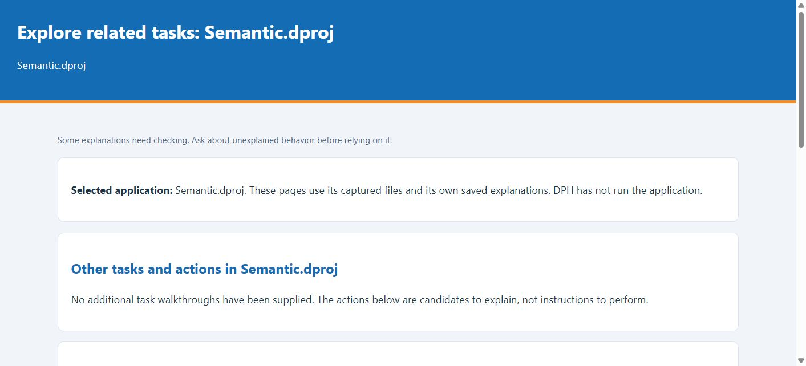
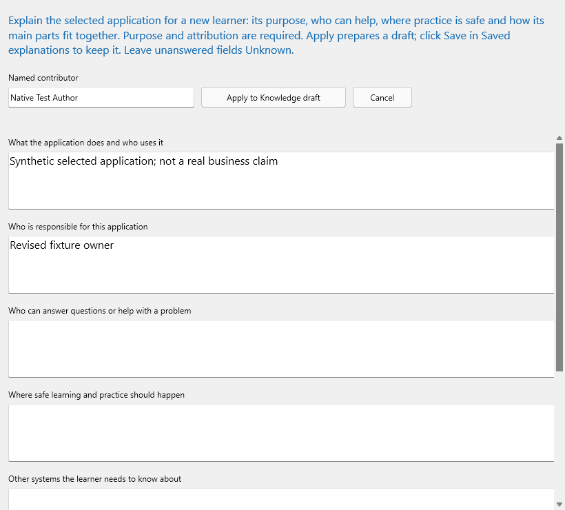
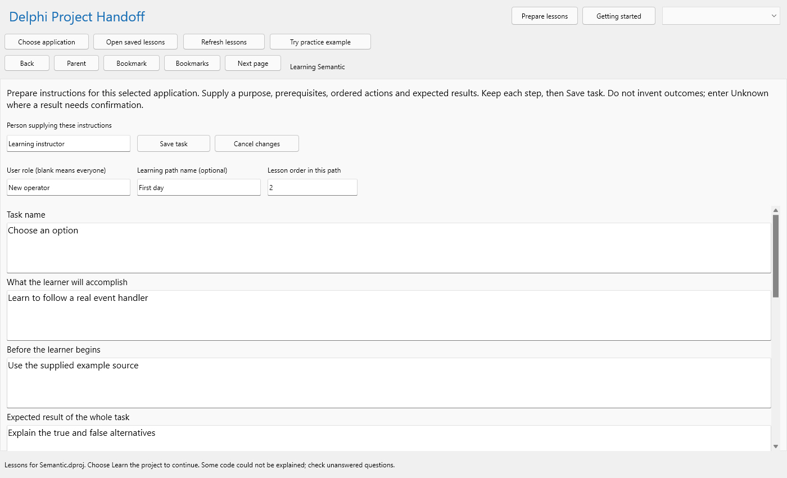

Guide edition 44 last changed 13 October 2026
Delphi Project Handoff (DPH) is a Windows desktop application for learning how an unfamiliar Delphi program works. Begin with the program's purpose and the people who use it. You can then study its screens, follow a task prepared by someone who knows the program, and explore how a visible action connects to its source. This guide explains how to operate DPH; the lessons displayed within DPH describe the particular application you choose to study.
For example, the page labeled Learning library contains explanations about the selected application. This guide shows you how to reach and use that page, while the explanations you find there may teach you what a field means or how a result should be interpreted. DPH can identify some facts from source files, but business rules and intended outcomes still need confirmation from someone familiar with the application.
If this is your first session, read Parts 1 and 2 in order. Part 3 shows you how to investigate screens, actions, and supplied explanations. Part 4 guides the person preparing lessons for others. Part 5 covers maintenance, sharing, and recovery; Part 6 provides a control reference, a glossary, and a complete exercise.
A learner uses DPH to understand a selected application and check their understanding. Begin with the application's stated purpose and a task its owner has described. You do not need to read Delphi code or change source-reading settings to complete this route.
A lesson preparer supplies information that source files cannot establish on their own, including intended users, prerequisites, field meanings, examples, expected outcomes, and safe recovery instructions. Follow the learner route before preparing material so you can see how your explanations will appear. Part 4 then takes you through writing and reviewing them.
A maintainer may also need to investigate source connections, adjust source-reading settings, or review lessons after the source changes. Those activities appear later in this guide. The separate Engineering Guide covers the construction and maintenance of DPH itself.
When you select an application, DPH reads its Delphi project file together with the related Pascal source files and saved form definitions. From the portions it supports, DPH identifies controls, events, operations, and their connections. It may show, for example, that a button responds to a particular operation or that a condition leads to different paths. Because DPH reads the files without running the selected program, it cannot confirm that a transaction succeeds in practice.
People who know the application can add its purpose, business language, task instructions, and actual pictures. DPH records who supplied each explanation and tracks review as a separate decision. Where an explanation is missing, treat it as a question for a knowledgeable person. The most useful lesson combines a supported source connection with an account of what that connection means to the person using the application.
Names such as Choose application and Save task reproduce the labels displayed in DPH. In the procedures, click means press the left mouse button once; double-click means press it twice in quick succession. Select a named row, file, or option before continuing, and type text into the field identified in the instruction.
Each procedure identifies a starting point, the action to take, and the result you should see. If a named control is outside the visible area, maximize DPH or scroll within the relevant pane. Check the page and control name before acting: Save task stores the complete task, whereas Keep step adds the current step edit to the task draft.
DPH is delivered as a ZIP archive. After extraction, the folder contains DelphiProjectHandoff.exe, which starts the application, and several supporting items. The help folder holds local assistance, docs contains the guides and directions, and migrations contains files DPH needs when opening lesson databases. WebView2Loader.dll supports the embedded browser that displays formatted learning pages.
Keep these items together when you move or copy DPH. Moving the executable by itself can leave the application unable to find its help or database migrations. The Microsoft WebView2 Runtime is a separate Windows prerequisite; WebView2Loader.dll does not install or replace it. If a formatted page fails to open, use the troubleshooting guidance in Chapter 24 before moving or deleting files.
Locate the DPH desktop ZIP and choose a permanent local folder where you have permission to save files. Avoid a temporary folder that Windows or another tool may clear. DPH needs a writable location for its lesson database and working material; it keeps those items separate from the source of the application you are learning.
Expected result: you are viewing an ordinary folder containing the application and its supporting files. You are no longer browsing inside the ZIP. Starting an executable directly from the archive is not the supported procedure.
Expected result: DPH is open and ready to read or prepare lessons. Opening DPH does not run any application whose source you later select.
Use the standard Windows buttons in the upper-right corner to minimize, restore, maximize, or close DPH. A maximized window provides the largest reading area. Restore the window when you need to place DPH beside another program or this guide. In a smaller window, command strips may scroll horizontally while lesson text scrolls vertically.
If a command is hidden, scroll its own horizontal strip; if text is hidden, scroll inside the reading area. The mouse wheel acts on the pane beneath the pointer, so it may move a list rather than the lesson beside it. This matters particularly when a task list and its instructions have separate scroll bars.
Reading a lesson leaves no unsaved draft, but preparing or editing an explanation can. Before closing DPH, wait for any active save to finish and read the status message. If DPH asks whether to save or discard changes, review the draft first. Cancel the close if you cannot tell which edit is pending.
Some preparation commands update a draft without storing the complete contribution. After Keep step, choose Save task to store the task. After Apply to Knowledge draft, return to Saved explanations and choose Save to store the application profile. Chapters 15 and 16 explain these procedures in detail. Resolve a failed save before assuming your work is on disk.
The upper part of the window offers three ways to begin. Getting started returns to the introductory page; the page selector beside it opens a learner destination; and Prepare lessons opens the tools for contributing application descriptions, tasks, and explanations. Choosing a learner page changes what you read, while preparing a lesson can change what future learners see.
In the command strip below, Choose application opens a Delphi project that DPH has not prepared before. Open saved lessons opens an existing .dphdb lesson database, and Refresh lessons rereads the attached source. When you are following source objects, Back retraces your selections and Parent opens a containing object where one is available.
You can use Bookmark to mark an object for the current session and Bookmarks to return to it. Next page displays more object results when another page is available. These commands belong to object investigation; they do not move between steps of a prepared task, which has its own Previous step and Next step controls.
Use the page selector in the upper-right corner to move directly to the material you need. For your first visit, choose Learn the project to see the selected application's learning route. Choose Learn a task when someone has supplied ordered instructions, or Learning library when you need an explanation of a field, question, error, or example.
The selector also includes Getting started, Form designs, Screenshots, Explain, Graphs, Business glossary, Search project, and Saved explanations. Form designs reconstruct saved layouts, while Screenshots displays pictures supplied by a person; Chapters 11 and 12 explain when to use each. Explain and Graphs let you investigate a source connection after you know which action you are trying to understand.
On pages that investigate source objects, the object list appears on the left and the labeled Selection details pane appears on the right. Click a row once to inspect its details, or double-click it to open the full explanation. Expand a branch to see its contents, collapse it to simplify the list, and use the name search when you already know what you want to find.
The wider central area displays the current lesson or investigation. Pages such as Learning library and Learn a task hide unrelated object panes to make more room for reading. Where a divider is visible, drag it to adjust the available width. An empty Selection details pane usually means that you have not selected a relevant object; it does not establish that the project contains none.
The status line at the bottom of DPH tells you when work is under way, has finished, or has failed. Some commands are unavailable while background work completes; wait for the result before starting another operation. If a save fails, text still visible in the editor may be unsaved. Keep the draft open, read the error, and follow the recovery advice in Chapter 24.
A message about incomplete source information or a needed refresh describes the state of DPH's analysis, not necessarily the behavior of the selected application. You may continue with lessons that are available, but note the uncertain point and ask a preparer to investigate it.
To start from source, obtain the application's Delphi project file together with its related Pascal and form files. If someone has already prepared lessons, ask instead for the associated .dphdb lesson database and its accompanying managed folder. A compiled executable alone does not provide the source connections DPH needs.
Ask someone familiar with the application who uses it, what a common task accomplishes, and where a learner can try that task safely. A project name cannot answer those questions, and DPH will not invent the answers.
Expected result: Learn the project shows the name of the application you selected. DPH has read the available source or saved lessons without launching, compiling, or changing that application. A newly selected project may have visible source connections even though nobody has yet supplied its purpose or a complete task.
On the Learn the project page, select Meet this app. Read the application purpose, intended users, and contributor information if someone has supplied them. DPH may also show form designs found in the source. These are reconstructed layouts, so visit Screenshots separately when you need an actual picture supplied by a person.
If the introduction does not explain the application's purpose or where a new user should begin, record that gap as a question. A form name, button caption, or file name may suggest what to ask, but it is not a confirmed business purpose. Request a description of the first useful task from someone who knows the application.
Next, choose Learn a real task in the learning list. If a complete task has been supplied, begin by reading its purpose, prerequisites, ordered actions, expected outcome, and review status. If DPH shows only an action connected to source, use that connection to frame a question for the application owner. Before treating it as a procedure, you still need to know what the user should enter, what result to expect, and how to recover when the result differs.
Expected result: you can explain what is known about the selected application and identify the questions that still need a person's answer. Another application's database produces a different route because its forms, actions, and supplied explanations are different.

Use the upper-right page selector to open Learn a task. Clear any earlier search, role, or learning-path filter that might hide the task you need. Select the task in the left-hand list, then read Before you begin and task context. These areas establish the purpose, prerequisites, contributor, and review status before you start following instructions.
Consider each action together with the result you should see afterward. Previous step and Next step let you review the sequence without recording progress. At the end, read the overall outcome, recovery guidance, and practice exercise, then compare your answer with the supplied one. Marking a step records your own check; DPH does not operate the selected application for you.
Return to Explore related tasks on the Learn the project page when you want another route through the same application. Choose an action or explanation related to the task you just studied. A linked control can take you to Explain, where you can read its plain-language description and, if needed, the source connection behind it. When source alone does not establish the business outcome, leave that question for the application owner.
For more detail about a screen, field, error, output, or worked example, choose Learning library from the upper-right page selector. Search for a term used by this application, and verify the result belongs to it. An empty library tells you that the necessary explanation has not been prepared; it does not show that the application has no rules.
If the task list appears empty, first clear its name, role, and learning-path filters and confirm that the correct application is selected. If no complete task is available, ask a preparer to write one common procedure using Chapter 16. Give them the intended user, starting screen, inputs, choices, visible outcome, and safe recovery steps. A source-connected click event can help identify the right action, but it cannot supply missing operating instructions.
You may still find an older note written as free text. DPH preserves it as supporting material, but a preparer must supply the ordered actions and expected results needed for a dependable step-by-step task.
To keep your place in a prepared task, select a structured task and enter a name in Your name for saved progress. Use exactly the same spelling when you return. DPH uses the name only to identify local learning progress; it is not a password or an account in the application you are studying.
Expected result: on this computer, DPH remembers the consecutive steps you checked for the selected learner, application, task, and instruction revision. If the instructions change, you must check the revised task again so that progress recorded against the older wording is not mistaken for progress on the new procedure.
Previous step and Next step change what you are reading without recording a check. Start again takes you back to the beginning while retaining recorded checks; Clear my progress removes those checks for the selected learner and task. If the window is narrow, scroll the task's navigation strip horizontally to find the reset command.
If you want to repeat an exercise without losing your recorded place, use Start again. If you want DPH to treat the task as unchecked for this learner, use Clear my progress. Confirm the resulting count rather than assuming both commands do the same thing.
When you mark a step, you are recording that you checked its expected result. The mark does not certify mastery, grant permission to use a production system, or prove that an action occurred in the selected application; DPH does not observe that program while you follow the task.
To test your understanding, close the explanation and describe the action, input, choice, and outcome in your own words. Reopen the lesson and compare your account with the supplied example. If you remember the wording but cannot explain why a choice changes the outcome, revisit the example before marking the step.
DPH stores lesson material and personal progress in different places. Copying a .dphdb database with its adjacent .dphdb.views folder preserves the lessons, but does not automatically transfer your progress to another computer. If you need an independent record, note the application, task, and instruction revision in your own learning notes.
Each person who needs separate progress on a shared computer should use a distinct, consistently spelled learner name. Using someone else's name may display or change the checks associated with that name.
When you return to an application or begin with another one, make sure you have the correct material. Ask its owner for the Delphi project file and the related source and form files, or for a lesson database already prepared from them. A compiled executable does not contain the declarations and connections DPH reads. A .dproj describes one Delphi project, a .dpr contains its main Pascal program, and a .groupproj identifies a related group of projects.
For a useful first lesson, also ask who uses the application, which common task to study, what example inputs and outputs are appropriate, and where the task may be tried safely. Do not assume that a source folder includes every dependency or explains every business decision.
Expected result: DPH associates a lesson database with the application or project group you selected. It stores that database and its managed views outside the selected source, without modifying or compiling the project.
Expected result: saved lessons can remain readable when the original source is unavailable. Availability of a cache does not establish that the selected program is unchanged today.
Before switching applications, save or deliberately discard any contribution still in draft. Then open the other application's lesson database or select its project file. Each database belongs to its own source identity, so do not reuse one simply because its filename looks convenient. If DPH reports a source-root mismatch, preserve the database and follow the relocation or new-database procedure later in this guide.
If the new application fails to open, read the error before selecting something else. A rejected selection does not change the application you are studying. Confirm the displayed name and current page before adding any contribution.
Meet this app introduces the purpose and intended users of the application you selected. Check who supplied the description and whether it has been reviewed. The page may show form designs found in the saved source and indicate whether someone has supplied actual screenshots. Use a form design to choose what to investigate, but do not assume it shows the first screen seen when the application runs.
If no purpose has been supplied, ask who uses the application, what work it supports, and which screen begins a first task. DPH shows the gap so it can be resolved; the name of a source file is not an adequate substitute for that explanation.
Learn a real task introduces the first complete procedure supplied for this application, if one is available. Read its purpose, prerequisites, actions, expected results, troubleshooting advice, practice question, and attribution. You can then open Learn a task for a reader that takes you through the steps and tracks your personal checks.
If nobody has supplied a complete task, DPH may show a control or event identified in the source. Treat it as a lead for the person preparing lessons. Ask them to establish the required inputs, important choices, correct outcome, and safe recovery before anyone follows it as a live procedure.
Explore related tasks offers other prepared tasks in their teaching order, along with source-connected actions and explanations supplied for the same application. Select an item relevant to what you have just learned or to the question you want to answer next. The page shows a limited number of candidates at once; more may exist elsewhere in the application.
When you follow a linked object to Explain, read both the supported source connection and any meaning supplied by a contributor. Use Back or the page selector to return to the learning route. You can leave the deeper source detail closed when your immediate question concerns the user's purpose and expected result.
Resolve unknowns gathers the questions that prevent the route from becoming a complete lesson. These may concern a missing purpose, unfinished task instructions, or a lack of actual screenshots. Source reading also cannot establish every business rule, permission, or correct runtime outcome. A knowledgeable person can use Author questions to supply an attributed answer or Prepare lessons to add and review the missing explanation.
Make each question specific enough to answer. For an action, ask what it helps the user accomplish, which inputs affect it, what visible result indicates success, and what to do after an error. Refreshing source may update a technical connection, but it cannot create a business rule that nobody has explained.
Expected result: the explanation tells you what the subject means and gives you an example you can apply. Before relying on a search result, confirm that it belongs to the selected application and is intended for your learning role.
Each teaching explanation has seven fields with a different purpose. Topic name identifies what is being explained, and User role identifies the intended reader. Meaning describes the subject and why it matters. Example shows a valid input, an interpreted output, or a realistic situation. Limits records known rules, units, permissions, and common mistakes. Help tells the reader how to respond when the result differs. Practice offers a question or exercise together with its expected answer.
For a field in the selected application, the meaning should say what its value represents. A useful example shows a realistic entry and the visible result, while limits should state accepted units or ranges only when the application owner has confirmed them. Help should offer a safe correction, and the practice answer should demonstrate the rule rather than repeat the caption.
Choose a category according to the question you want answered. Screen explains the purpose and arrangement of a visible area, while Field describes a particular input or displayed value. Error or problem covers a symptom and its recovery; Question and answer records a focused reply. Business rule explains when a condition applies and what follows from it. Output or report helps you interpret a result.
The remaining categories cover context that may affect the task. Role or permission describes who may perform work, but does not grant access. Related system explains a dependency; Setting or option explains how a choice changes a result. Background work describes activity that may continue after a visible action. History or design choice records why an approach was taken, and Learning check provides an exercise to test your understanding.
If the expected explanation is missing, clear the search and role filters before searching again. Confirm that the right application is selected, then ask the preparer whether the explanation was saved and whether it remains current. Rejected or retired teaching cards do not appear in the current learner list.
An explanation may remain readable even when its linked object is absent from the current source capture. In that case, Explore related selection may be unavailable. Ask the preparer to review the link before treating the old connection as current.
Before following an action through source, it helps to know a few Delphi terms. A form defines a window or screen, and a component is an item on it, such as a button or input field. An event is something that may occur, such as a click; its event handler is the operation connected to it. Delphi calls a procedure or function a routine and groups related declarations and implementation in a unit.
You need not write Delphi code to use these terms. They let you describe a button the user sees, the handler connected to it, and the work that handler appears to perform. Keep that source connection separate from any business outcome that the source cannot establish on its own.
Expected result: you can explain one supported path from a visible action into the selected application's source. The connection describes what DPH found in the files; it does not prove that the path ran successfully in a live system.
Choose a control on a form design that matters to a real task in the application you selected. Follow its event link to Explain and identify the operation that responds. Note only the inputs, choices, and results that the source actually connects. Then compare what you found with a task or teaching explanation supplied for that same application.
If no relevant task or explanation exists, ask the owner what the action accomplishes, which values are valid, and what the user should see afterward. Record the question against the particular control so a preparer can add an attributed answer. An example from another application cannot supply the missing facts.
The Explain page can show a source walkthrough and further supporting detail. Open those sections when you need to investigate a particular condition or relationship. Captured text shows the statement DPH read; a trace lists supported connections; and a diagram makes branches easier to follow.
If DPH marks a connection as unresolved or uncertain, ask someone familiar with the source to check it. A graph describes relationships found during analysis, not a recorded user session. Dynamic event assignments and external services may require an observed example or a knowledgeable explanation.
Choose Form designs from the page selector to examine a layout reconstructed from a saved Delphi form definition. The view can help you identify control names, positions, captions, and event connections, but it is not a photograph of the running application. Custom controls, styles, inherited forms, and changes made while the program runs may make the actual screen look different.
Select a form, inspect a control, and follow its explanation if one is available. Adjust the view to see the whole design or a particular detail. If you need to know what a user sees in the current application, compare the reconstruction with a real screenshot supplied as described in Chapter 12.
After selecting an object related to your task, open Graphs and choose the relationship you want to investigate. Available views include Execution, Procedure CFG, Caller / callee, Form navigation, Data flow, Change impact, Data lineage, and Business process. A separate selector groups the display by Objects, Types, or Units. Select a node or group to read its explanation instead of treating the whole diagram as one uninterrupted process.
If one operation calls another, ask what work the second contributes. If the connection crosses units, ask which responsibility the first unit uses. Compare a labeled branch with the condition it represents. DPH may limit the displayed graph to keep it readable, so a hidden or omitted node does not prove that no such connection exists.
An arrow represents a relationship DPH found between two captured objects. Read its direction carefully: a caller may use another routine without that routine calling back. Incoming connections tell you what may reach an object; outgoing connections show where it may lead.
An unresolved endpoint, inference label, or warning means DPH cannot establish the whole relationship. Keep that qualification when explaining the diagram. For example, say that the source suggests a path but that an author must confirm a dynamic destination, instead of presenting the destination as a verified fact.
In your selected application, choose a screen action relevant to a prepared task. Identify the control, its event and the responding operation. Compare a source-derived condition with the task's authored expected result. State which part is supported by source and which part depends on a knowledgeable person's explanation.
You have completed the exercise when you can connect the visible action to a named operation and describe the outcome the user should recognize. If nobody has supplied that expected outcome, identify the missing answer rather than assuming that a technical connection completes the lesson.
On Form designs, choose a captured form using the form selector. Thumbnail provides an overview, Fit uses the available viewing area, Native shows the saved design scale, and Custom zoom lets you inspect a control more closely. The zoom slider covers 25 to 400 percent. Full screen gives the design the largest available area; select the same control again to leave that view.
Read the warning beneath the viewing controls: this is an approximate reconstruction of the saved design. Select a relevant control and open its explanation if one is available. When the running screen differs, compare it with a supplied picture and keep the difference clear rather than presenting the reconstruction as a current screenshot.
Choose a graph according to the question you want to answer. Execution gives an overview of supported connections. Procedure CFG, short for procedure control-flow graph, shows alternatives, repetitions, and stopping paths within one routine. Caller / callee shows which operations call others; Form navigation shows supported connections between forms; and Data flow follows captured uses of information.
Change impact highlights relationships that may matter when an object changes. Data lineage follows where captured information comes from and where it goes, while Business process presents process-oriented material where available. These views are limited by the captured source and knowledge. If a graph gives you no useful answer, identify the missing evidence before concluding that the application lacks the behavior.
Expected result: grouping reduces visual detail while preserving a route to the members that matter. Changing grouping changes presentation, not the source or the application's actual behavior.
Choose Screenshots from the page selector, then select a picture in the left-hand list. Read its caption, type, and contributor information before drawing a conclusion from it. A Screenshot is a screen picture supplied by a person; Sample output is an example result or report; and Other teaching image may be a diagram or illustration.
Use Fit to display the whole picture in the available area, Native pixels to see it at its own pixel size, or Custom zoom to examine a detail. The zoom slider ranges from 25 to 400 percent. Scroll within the picture when it extends beyond the viewing area. Enlarging a low-resolution image cannot reveal detail that was never captured.
Numbered markers point to details that a contributor has explained. Match each marker with its description below the picture, then choose Learning library from the page selector when you need the complete explanation, example, or practice answer. A marker shows where to look; it does not establish that the pictured result is current or correct in every situation.
For a sample output, read the caption and available information about its contributor, date, and context before following a marker. Identify which inputs or options produced the result. A number or status without that context is not enough to teach someone how to interpret the output.
When a picture is associated with a captured object, Explain linked object opens that object's explanation. Use it to connect something visible in the picture with a control or operation found in source. An image without such a link can still be useful; ask the preparer to add the connection if it would help the lesson.
A useful caption identifies the relevant application version, sample values, and options. Without this context, a screenshot can mislead a new learner. If the image disagrees with the current form or instructions, note the difference and ask its contributor which version it represents.
Before you begin, obtain an existing PNG file you are authorized to use, a meaningful caption and a named contributor. If it should connect to a source object, select that object first.
Expected result: DPH stores a managed copy of the picture you supplied. It does not launch the selected application or take a screenshot for you. Keep an independent original if the image is an important record.
Expected result: the point remains anchored when the image is resized or zoomed. The original PNG is unchanged. If you clicked the wrong point, cancel the new draft and start from the correct location rather than saving a misleading annotation.
DPH offers different searches because its information serves different questions. The object-list search finds captured source objects by name. The search on Learning library finds titles and text in supplied teaching explanations. Search project covers indexed objects, evidence, knowledge, and diagnostics. Choose the one that matches what you already know.
For a visible field caption, start with Learning library or a screen lesson if you do not know the field's Delphi name. For a code name such as CalculateClick, try the object-list search or Search project. For an exact failure message, look first for a teaching explanation with safe recovery advice, then ask a maintainer to inspect source evidence if necessary.
Expected result: DPH looks for every query word at the beginning of an indexed word. If any word does not match, the result is excluded. Unlike some web searches, this search does not silently ignore a word or replace it with a synonym.
Begin with one distinctive word. Add a second if the results are too broad, but avoid entering a whole sentence because every word must match. Try a source name and the wording visible to users as separate searches. The Business glossary may provide another name or alias that leads to a better query.
A matching evidence record is not necessarily a reviewed explanation. Check its type, source context, and any qualification before using it. A diagnostic result may point to a question about DPH's capture; it does not by itself explain an error seen by someone using the selected application.
When a useful source object is selected, choose Bookmark. Use Bookmarks to return during the session. Record the application, object and question in your own learning notes if you need to preserve the route outside DPH.
Use Back for the route you just followed and Parent for a containing object. Next page changes the page of object results; it does not advance a task step. If the wrong selection appears, check which navigation area you used.
Use Business glossary for words that belong to the selected application's work or business process. Delphi terms, by contrast, explains programming vocabulary such as form, event, and routine. For example, a particular application's case status would need a business definition, while procedure is a Delphi term.
Choose Business glossary from the page selector and search for the word or one of its aliases. Read the definition in its stated context and consider the supplied example. Because the same word can mean different things in different applications, confirm the selected application and contributor before reusing a definition.
Resolve unknowns on the Learn the project page identifies questions the current lesson cannot answer. A knowledgeable contributor can use Author questions under Prepare lessons to record a named reply. The answer should preserve the original question, explain the behavior, give an example, and say when the explanation does or does not apply.
For example, if a learner asks when a changed record appears in a list, the answer needs an owner-confirmed trigger and the visible result to expect. Calling the page event-driven would leave the learner without a useful action to take.
Saved explanations records who contributed material and which revision you are reading. Saving makes a contribution available; a separate review determines whether someone has checked it. Pending material may still be informative, but rejected or retired material belongs to the historical record rather than to current task instructions.
Review may need to be repeated after the source changes. Even identical wording can become misleading when the operation it describes has changed. Ask a reviewer to compare the current task, its source connection, and the example supplied with it.
When requesting review or a missing explanation, identify the application, visible action, expected result, and exact uncertainty. Supply example values without including private customer data. One focused question is easier for the contributor to verify than a broad request to explain the entire screen.
Before writing an introduction, speak with someone who knows the application. Establish who uses it, which problem it solves, a common task worth learning first, where that task can be practiced safely, and who can answer further questions. Leave an unanswered point visible rather than filling the space with a plausible guess. A newcomer should be able to use the introduction to choose a sensible first task.
“Office application” is too broad to serve as a purpose statement. A helpful description identifies the user's role, the work performed, the screen where that work begins, a typical input, and the outcome the user should recognize. Distinguish details the owner has confirmed from questions that still need an answer.
Expected result: the application introduction appears in the learner route with its contributor identified. Applying the profile dialog prepares a draft; the subsequent Save in Saved explanations stores its revision in the lesson database.

The supporting fields answer different questions. Owner identifies who is responsible for the application; contributor names the person who supplied this particular description. Support tells the learner where to take a question, and safe practice environment identifies where an exercise may be attempted without affecting production work. Mention related systems when they help explain the task rather than listing every dependency.
Use Architecture to describe major responsibilities and how information moves between them. For a small application, that might mean explaining how a form accepts input and displays a result. For a larger one, identify the visible client, any relevant service, and the result returned. Keep details that have not been confirmed clearly marked as questions.
Review the saved introduction from the position of someone who has never used the application. Can you identify its intended user, the first useful action, and a safe place to try it? Are unfamiliar terms explained, and can you tell which statements came from a knowledgeable person rather than from source alone?
If the text repeats product names or component types without describing the user's work, revise it. Keep unanswered questions visible. A professional introduction gives the learner a reliable starting point without sounding more certain than the evidence allows.
Plan one task around a result the learner should be able to recognize. Before opening the editor, establish the prerequisites, the actions in order, what should appear after each action, how to recognize overall success, and how to recover safely when something differs. Give unrelated goals their own tasks; a learning path can then place those tasks in a sensible sequence.
A task for the selected application might involve finding a record, preparing a report, or submitting a request, if that is work the application actually supports. Name the role and starting screen, describe each visible result, and use terminology confirmed by the owner. An approved practice environment matters as much as clear wording. Do not carry a sample procedure from one application into another.
Expected result: the draft describes the task and its final outcome, but remains unsaved until you complete the later Save task step. Leaving User role blank makes the task available across learning roles; a role filters instruction and does not grant system access.

Expected result: every step in the draft says both what the learner does and what should happen afterward. Undo step edit abandons the current unsaved step change; it does not save or discard the whole task.
Expected result: the task now has a saved revision attributed to its contributor. If saving fails, keep the draft open and resolve the reported problem before leaving the editor. Cancel changes deliberately discards the draft.
A structured task has six teaching fields and may contain from one to 100 steps. Each teaching field and each step's action or expected result may contain up to 4,096 characters. The task name has a 200-character limit and must identify the task; its purpose must explain what the learner will accomplish. Use Unknown only for a genuinely unresolved supporting answer, never in place of a meaningful name, purpose, or step action.
The role and learning-path names each have a 200-character limit, and the complete structured task is limited to 64 KiB. These limits protect storage and validation; they are not writing targets. Make each step short enough for a learner to perform and check without losing the point.
The saved task identity is retained during revision. Personal progress belongs to the exact revision, so a changed instruction requires fresh checks. Create a different task when you need a different learning goal rather than repurposing an old identity with an unrelated procedure.
To build a learning path, give related tasks the same path name and place them in increasing Lesson order. Begin with orientation and safe boundaries, then teach inputs, the usual action, alternative outcomes, and recovery. You may leave gaps between whole-number order values so you can insert a task later.
View the finished path using its intended role filter. Unrestricted tasks may appear alongside role-specific ones, so check their names and prerequisites. DPH presents the prepared order without preventing a learner from selecting a later task; the path is a teaching sequence, not a certification system.
Prepare a teaching explanation when a newcomer needs to understand a screen, field, error, recurring question, rule, report, permission, dependency, setting, background activity, design reason, or learning check. Give the explanation one recognizable subject. A title that identifies the actual field and its purpose helps more than “General information.”
If the explanation should link to a source object, select that object before opening the editor. Make sure the object genuinely supports the subject. A convenient but unrelated link makes the lesson harder to trust and harder to maintain.
Expected result: the saved explanation presents its meaning and example to learners, with contributor and review information available. Saving establishes a contribution; it does not independently verify that the business explanation is correct.
Use the field name visible to the application's user. Explain who enters or reads it, what the value represents, and why it affects the task. Include one example confirmed by the owner, with appropriate units and a result the learner can recognize. State accepted values and common mistakes only when those rules have been established. Finish with a safe response to a rejected entry and a practice question that tests the rule.
If the application has a date range, for example, the learner may need to know whether both end dates count, which time zone applies, and what the resulting period covers. Two date controls in source cannot answer those business questions by themselves. “Enter a date” therefore needs more explanation before it can guide a newcomer reliably.
Begin an output or report explanation with its name, intended reader, and the decision it supports. Work through an example using inputs, filters, dates, units, and a visible result confirmed by the application owner. Explain subtotals, exceptions, and warnings in their business context, then offer a question whose answer the owner can check.
If a column or calculation has not been explained, record a question for its owner. A numeric heading or source routine does not establish the business meaning of the value. The learner needs to know how to interpret the result and what to do when it differs from expectations.
To revise an explanation, find it in Learning library and choose Edit explanation. Change the fields that need correction, save the revision, and reread what learners now see. A topic retains its identity through revisions; if the subject changes, create a separate explanation. Unknown can identify unresolved supporting information, but the topic still needs a meaningful name and a clear account of what is known.
Each of the seven teaching fields has a 4,096-character limit. Write enough to teach the chosen subject without using one card as a container for unrelated instructions. Link related explanations or create distinct tasks when the learner has several goals.
Expected result: learners can find the term by its main name or an alias and read its meaning in this application's context. Avoid creating a second current term for a spelling variation when an alias would clarify the same concept.
A term must occupy one line and contain no more than 128 characters. You may add up to 32 aliases, each a nonempty single line of no more than 128 characters. Definitions and examples may contain up to 16,384 characters each; context may contain up to 4,096. Use these as maximum limits, not as a reason to combine unrelated concepts under one term.
Under Prepare lessons, choose Action purposes and find the action by name or review state. Use First page or Next page if it is not on the current results page. Select the action and choose Edit purpose. The editor asks what the user accomplishes, what must be in place beforehand, which input matters, what outcome is expected, and which permissions or questions remain. Apply the draft, then save it in Saved explanations. Use Open in Knowledge when you need to inspect the general record, its revision, or its review controls.
An action's purpose explains why the user performs it; a source handler identifies the operation connected to it. A Search button, for example, may help a user find a record, but the owner must establish how the search works and what result counts as correct. The handler name SearchClick cannot supply those answers.
The editor keeps the action's captured identity separate from the explanation you write. Check that its object, screen, trigger, and user role refer to the intended action. Then describe the business purpose, prerequisites, user steps, expected outcome, evidence, and recovery in the appropriate fields. Use New task when you need an attributed project task that does not begin with a particular captured control.
Expected result: the named contributor's reply remains connected to the question that prompted it. DPH can identify a question from source, but it cannot automatically approve the business meaning of a person's answer.
Make clear which application behavior and example an answer describes. If that behavior changes, revise the answer and ask a reviewer to compare it with current source and an approved example. Retire information that should no longer be taught as current while preserving its history where required.
Use safe example data. Passwords, access tokens, and private customer records do not belong in a teaching answer; an invented or approved example can explain the rule without exposing confidential information.
Expected result: the explanation has a saved revision that you can reopen and read. Editing and saving it later creates a new revision without erasing the earlier contribution.
Saving a contribution makes it available but does not show that anyone has checked its accuracy. A knowledgeable reviewer should compare it with the intended behavior, the relevant source connection, and a reliable example. On the correct record, enter the reviewer's name and choose Verify review. Reviewing against current source also requires that DPH has the right source attached under the intended reading configuration.
Use Reject for material that should not become accepted instruction, and Retire for material that no longer belongs in current use. Discard edit only abandons the unsaved change in the editor; it does not retire a saved revision. Confirm which record is selected before making a review decision.
To associate a saved explanation with what it describes, select the intended record in Saved explanations and open Knowledge links under Prepare lessons. Choose whether the target is an entity, relationship, evidence item, screenshot, or section. Narrow the list with a name filter if needed, then choose Find targets. Select the right target, assign the role explains, cites, depends_on, or illustrates, and choose Add link. Check the link list on the right before returning to Saved explanations to save the record. Adding a link to a draft does not store it until that save succeeds.
Link a field guide to the actual control where possible, or link a business rule to the operation or condition that supports it. An author answer should point to the precise contribution or evidence it discusses. Links make an explanation easier to trace; they do not themselves constitute a review of its accuracy.
To remove a link, select it in the right-hand list, choose Remove link, and save the changed explanation. Open saved target lets you inspect a supported target before deciding. Find targets shows at most 200 candidates, and a section can hold up to 64 links. If the intended target is absent from a broad result, narrow the name filter instead of assuming that every candidate was displayed.
If DPH reports a revision conflict, the saved record has changed since you began editing. Keep your draft, reopen the latest saved revision, and compare the two before applying only the correction you intended. Do not overwrite newer work merely to remove the warning.
For a validation failure, read the named missing field or exceeded limit, correct the draft, and try saving again. If the failure concerns storage or access, preserve the last readable database and follow Chapter 24. Text that remains visible in the editor does not establish that a save succeeded.
Runtime observations, under Prepare lessons, lets a contributor attach an existing log as a claim about a particular run. Select an object in Explorer first if the observation should refer to it. Enter the contributor, run, environment, and outcome information, then choose Select saved log and import and select the existing file. Wait for confirmation. Refresh saved records displays up to the 50 newest entries; Explain linked current object follows a valid current link where one exists.
Read an observation together with the circumstances supplied by its contributor. Importing a log does not mean DPH ran the other application, verified its timestamps, or established which event caused another. These records remain local to the lesson database and its explicit backups rather than appearing automatically in published lessons. If the finding matters to learners, write an attributed teaching explanation that states its limits without exposing the raw private log.
To return to a lesson database that DPH knows, open Prepare lessons, choose Projects, and open Known databases. Select the entry and choose Open selected, or double-click it. Confirm the application identity after it opens. The Refresh command here updates the database list; it does not reread source as Refresh lessons does.
Remove from list forgets a catalog entry without deleting the database or source project. An entry for a missing database remains visible so you can find a moved file. Open the database at its new location using Open saved lessons, then remove an obsolete catalog entry if necessary.
Before rereading source, save or deliberately discard any contribution drafts. Confirm that the attached files belong to the application you intend to teach and that the source-reading settings are correct. Choose Refresh lessons and wait for its completion message.
Afterward, revisit the application purpose, a representative action, and the prepared tasks. Refreshing updates the captured source facts but cannot automatically confirm explanations supplied by people. If a linked control or operation has changed, arrange a review of the related instructions before teaching them as current.
A saved lesson database can remain useful while its original source is temporarily unavailable. Read its cached material with the capture context and limitations in mind. An older example may still teach you something, provided you do not claim that it has been checked against today's source.
Reconnecting source requires the actual files belonging to that application. Renaming a different folder will not make its contents equivalent. If the original source has moved, ask a knowledgeable preparer to use the verified relocation procedure.
When the same application's source has moved, expand Source reading settings under Prepare lessons and choose Relocate verified source. Select the project in its new location and let DPH check its identity. Investigate a reported mismatch instead of forcing the connection.
Relocation is for the same logical source set in a different place; it cannot combine lessons from unrelated applications. Preserve the existing lesson database and its adjacent managed folder before undertaking this maintenance work.
An offline edition gives someone a readable copy of learning material about the selected application. It is separate from both the editable lesson database and the DPH desktop application. Before exporting, save and review the contributions you intend to share. Examine captions, examples, and pictures for information that should not leave their original setting, particularly material taken from a production system.
Choose the audience and scope that fit the recipient. Publication settings can exclude files or begin with selected objects and their context. Make sure the resulting explanation does not imply that an excluded supporting connection is present. Ask a maintainer for help when the edition needs a narrow scope.
Expected result: the edition opens with the selected application's learning route and includes the tasks, examples, links, and pictures allowed by the chosen scope. Preview helps you check the export, but you should also open the resulting folder independently before sharing it.
Transfer the entire output folder, including its assets, images, objects, and supporting indexes. Sending learning.html by itself may break linked explanations and pictures. If you compress the edition for transfer, tell the recipient to extract the complete folder before opening learning.html.
Check the transferred copy, not only the original: open an object link, a task, and an image from the recipient's folder. This reveals missing files that may have been present on the preparer's computer but omitted during transfer.
An exported edition is a read-only presentation of the material available when it was created. To change an explanation, reopen the .dphdb lesson database in DPH, save a new revision, and create a fresh edition. Keep the editable database because the shared folder does not contain its full revision history.
If the recipient needs printable material, use any guides supplied with the edition or ask the preparer to produce PDF companions. The Engineering Guide describes how those documents are converted and checked.
Expand Optional publication settings on Publish. Full project includes the selected project's available scope. Selected object and context starts from the current selected object and its supported related context; select that object before exporting. Enter relative files or folders to exclude in the exclusions field, separated as indicated by the control. Audience offers all, engineer, user, maintainer, builder and agent. Audience organizes content; it does not replace file exclusions.
Include redacted source browsing pages adds technical source material that requires review before sharing. Include generated agent boundaries adds generated instructions, rather than copying a private owner AGENTS.md file. Optional authored-body translation locale is meaningful only when the supporting translated material is available. For an ordinary beginner edition, retain the learning route and include technical extras only for a specific recipient need. After setting scope, return to the export steps and inspect the actual output.
A .dphdb lesson database contains captured facts and knowledge supplied by people. Its adjacent .dphdb.views folder may contain cached pages and managed pictures. Preserve the database and folder together. The Databases folder supplied with DPH is a convenient default location; each application's lessons still belong in their own database.
DPH keeps checked-step progress separately on the local computer, while an offline edition contains a reading copy for recipients. The lesson database, personal progress, and published edition serve different purposes, so preserving one does not preserve the others automatically.
Expected result: you have a copy of the lesson database and its managed material that can be checked and used if the working location becomes unavailable. A simple file copy made while DPH is still changing the database may be inconsistent, which is why the procedure begins by closing DPH.
DPH keeps database administration outside the ordinary learner and lesson-preparation route. A maintainer control may exist in the program without appearing as a destination in your current page selector. If older directions name an administration page that you cannot see, use the current interface and seek the appropriate maintainer instructions rather than guessing.
Engineers responsible for database backup, restoration, integrity, or cache retention should follow the Engineering Guide and the controls verified for their build. Those tools protect DPH's lesson data; they do not back up the selected application's business database.
A database does not become disposable because its catalog entry is missing. Likewise, a .dphdb.views folder may hold pictures someone supplied as teaching material alongside generated pages. Ask a preparer or maintainer to identify what can be regenerated and what must be preserved before deleting anything.
Give a temporary exercise database a clear name and keep it apart from production application source and established lesson stores. Clear separation makes later cleanup an informed decision.
Under Prepare lessons, Source reading settings is normally collapsed because most learners never need to change it. A preparer may open it when conditional code, a missing dependency, or incorrectly displayed older text prevents DPH from producing a useful lesson.
The configuration, platform, extra defines, approved dependency locations, and text encoding tell DPH how to read source. They do not configure or run the selected application. Changing them neither builds nor launches that program.
Ask the application author which Debug or Release configuration and Win32 or Win64 platform corresponds to the code you intend to explain. Add compiler defines only when the source requires them, separating multiple names with semicolons. These choices matter because different defines can make different branches of source relevant.
If DPH needs source outside the project tree, identify the specific dependency folder the author permits it to read. Supply or name a missing dependency rather than selecting an entire drive in the hope that it contains the right files.
Text encoding determines how characters are read from a source file's stored bytes; it is different from translating the application's language. Leave the source-reading code page at 0 unless an older file displays characters incorrectly and its author can identify the appropriate Windows encoding.
A file saved with an older encoding may, for example, need that encoding to display accented text correctly. A Unicode byte-order mark takes precedence when one is present. After changing the reading setting, refresh lessons and inspect the affected text again. Do not alter the original source merely to change how DPH displays it.
When DPH cannot explain a source connection fully, start by checking the project file and the source set supplied with it. Confirm that include files, dependent units, and forms are available, then review the configuration, defines, and approved dependency locations. If the relevant behavior is determined while the other application runs, describe the limit honestly and ask someone who has observed it to contribute an explanation.
Record a precise question alongside what DPH does know. Internal fingerprints and counters may help a maintainer investigate the capture, but they do not teach a beginner what the selected application does.
If DPH fails to open, confirm that you extracted the entire delivery and launched DelphiProjectHandoff.exe from the extracted folder. Check that its supporting files remain beside it and that the location is writable. Keep the exact Windows error message for the maintainer. Deleting lesson databases will not address a startup error in the executable.
If the main window opens but formatted pages do not, investigate the browser component separately. Ask a maintainer to check the Microsoft WebView2 Runtime and supplied loader. Read any native-text explanation offered by DPH, and open an exported learning.html in a browser if one is available. This helps distinguish a display problem from missing lesson material.
When a task or explanation appears to be missing, first confirm the selected application and clear any name, role, or path filters. Check whether the task list has another page. If nothing appears, ask the preparer whether the structured task was saved; an unsaved draft or a note in Saved explanations does not become an ordered task automatically.
Rejected and retired teaching material does not appear in current learner lists. If someone recently revised an explanation, check its current revision and your filters before creating a duplicate.
Read the exact status message before changing the draft. A missing required field, invalid lesson order, or exceeded size limit calls for a correction to what you entered. A revision conflict means you must compare your draft with the latest saved version. If another DPH writer owns the lesson store, resolve that situation rather than opening additional instances against the same database.
Keep your draft visible while diagnosing the failure. If you need to preserve its text outside DPH, use an approved location and exclude private data. After correcting the problem, wait for a successful save and reopen the contribution to confirm it was stored.
If a picture is absent, confirm that its import completed and that the .dphdb.views folder stayed beside the database when it was moved. Select the image and read its caption. Try Fit before concluding that it is empty; a high zoom level may place the important area outside the visible portion.
If a numbered marker points to the wrong detail, compare it with the original image and the point the contributor selected. The marker stays with the stored picture, not with changes in the live application. Review or replace its explanation when a new image has different content or dimensions.
For broken links in a shared edition, confirm that the recipient received and extracted the whole output folder. Open learning.html from the top of that folder and keep its objects and assets subfolders alongside it. If a file is missing, transfer the complete edition again; a link to a file on the preparer's computer will not repair the recipient's copy.
If DPH reports that the edition itself is invalid, create a new export from the intended saved material. Ask a maintainer to investigate a checksum or fingerprint error rather than disabling the check or editing the manifest by hand.
To resume progress, use the same learner name, application, and saved task revision on the same computer. Revised instructions require fresh checks. Next step changes the page without recording progress; choose I checked this result only after you have compared the observed result with the expected one.
Start again takes you to the beginning while retaining your checks. Clear my progress removes them. If the two commands seem to behave alike, look at the checked-step count and task revision before reporting a problem.
A useful problem report identifies the DPH delivery version, selected application, page, action taken, expected result, and actual result. Include the exact error text and a picture of the relevant area when helpful. Replace private customer information with safe example data.
Write the shortest sequence that reproduces the problem. For example, specify which lesson database to open, which task to choose on Learn a task, which learner name to enter, and which result fails when checked. These details let a maintainer reach the same state without guessing among many pages and controls.
The opening commands reflect what you already have. Choose application begins with a Delphi project and its source; Open saved lessons returns to an existing .dphdb database. Refresh lessons rereads the attached source. Getting started returns to introductory directions, Prepare lessons opens the contribution tools, and the upper-right page selector changes what a learner reads.
If someone has given you a prepared .dphdb database, begin with Open saved lessons. If you have Delphi source that DPH has not prepared, begin with Choose application. Neither command launches the application you want to study.
Use Back to retrace object selections and Parent to move to a containing object. Bookmark marks a useful selection, while Bookmarks lets you return to it during the session. Next page displays additional object results. On Search project, Search runs the query and Next 50 results retrieves another results page.
Prepared tasks use a different set of controls: Previous step, Next step, and Start again change the reading position; I checked this result records a personal check; and Clear my progress removes recorded checks. Explore related selection follows an available source link from a teaching explanation. Check which page you are on before using similarly placed navigation commands.
Prepare a new task and Edit instructions open the task editor. Within it, New step starts a step draft and Keep step places that step into the task draft. Save task stores the complete task; Cancel changes abandons the draft.
Prepare an explanation and Edit explanation open the teaching editor, where Save explanation stores the teaching fields. In specialized dialogs, Apply to Knowledge draft returns the prepared material to the general editor; you must then choose Save in Saved explanations to store that draft. Verify review, Reject, and Retire make review decisions separately from the act of saving content.
Import an existing PNG screenshot adds a picture supplied by a person, together with its caption and type. Explain this point prepares an explanation anchored to a selected location in the image; Explain linked object opens a source object associated with that image. Fit, Native pixels, and Custom zoom change only how you view the picture, not the stored image itself.
Share lessons creates a new offline edition, and Preview lessons opens its learning route for inspection. The recipient begins at the edition's learning.html page. Optional source-navigation and generated instruction material adds technical detail only when deliberately selected; the ordinary learner route begins with the application introduction.
The application is the program you are studying; DPH is the separate program you use to read and prepare lessons about it. A learner studies the selected application. A preparer writes instructional material, a contributor is the named person who supplied a particular explanation, and a reviewer separately checks that contribution.
A lesson database is the .dphdb file containing captured source facts and contributed knowledge. Its managed folder, named .dphdb.views, holds cached pages and other managed material. An offline edition is a published read-only folder for recipients. A learning path orders prepared tasks, while a checked step records one learner's check against a particular revision of a task.
A form defines a Delphi window or screen. A component is an item on a form or in a module, and a property is one of its saved characteristics, such as a caption or alignment. An event is something that may happen, such as a click; its handler is the operation connected to it. Delphi calls a procedure or function a routine and groups related declarations and implementation in a unit.
Source refers to the files that describe the program. A project collects the files and settings for one Delphi build target, while a project group organizes related projects. A dependency is other code or a system needed by part of the application. A condition chooses between possible paths, a loop allows work to repeat, and an output is a displayed, written, or transmitted result.
Static information comes from reading source rather than observing the application while it runs. Captured information belongs to a particular source set and reading configuration. Current source means the attached files still agree with that capture under the selected settings; stale means the agreement needs checking or refreshing. Partial indicates that some relevant source connection remains incompletely understood.
An attributed explanation identifies the person who supplied it. Verified review records a separate named check; saving alone does not provide it. Unknown marks a question that still needs an answer. A fingerprint is an internal identity check that maintainers use to compare captured material, not a measure of learning or a user permission.
Open DPH and choose an unfamiliar Delphi application or its prepared lesson database. On Meet this app, note its stated purpose, intended users, and a form design. Separate statements supplied by a named contributor from details DPH derived from source. If the purpose or starting screen has not been explained, write one specific question for the owner.
This stage is complete when you can explain the application's purpose in everyday language, or clearly identify that the explanation is still missing. A plausible guess based on the project name does not complete the exercise.
Choose Learn a real task. Where someone has supplied a complete task, open Learn a task and read its prerequisites, actions, expected results, and review status. Record progress under your learner name only after checking an expected result. Where no complete task exists, examine a source-connected action and list the inputs, outcome, and recovery guidance that its owner must still supply.
Next, return to Explore related tasks and find another action or explanation from the same application. Describe how it relates to the first task. You have finished this stage when you can explain the expected outcome or identify the precise missing answer that prevents a dependable procedure.
Open Screenshots and inspect an actual image if someone has supplied one for this application. Read its caption, contributor, and numbered explanations before comparing it with a Form design. Keep clear which view is a supplied picture and which is a reconstruction from source. On Resolve unknowns, record unanswered questions about rules, permissions, or expected outcomes.
If no real picture is available, ask for one with its version and context. Do not label a reconstructed form as an observed screen.
If you are preparing lessons for this application, write one task or teaching explanation about a real field, action, or result. Include its meaning, an example, known limits, safe help, and a practice question with its answer. Save it, reread the learner-facing page, and ask a knowledgeable reviewer to check any business information that needs confirmation.
Create a fresh offline edition and open its learning.html page independently. Check that the four-part route names this application, includes the explanation you supplied, and makes unresolved questions visible. Preserve the editable lesson database separately. A newcomer should be able to begin from the edition without needing someone to decode technical names for them.
Optional translation requires an internet connection. Product and code names retain their original spelling.